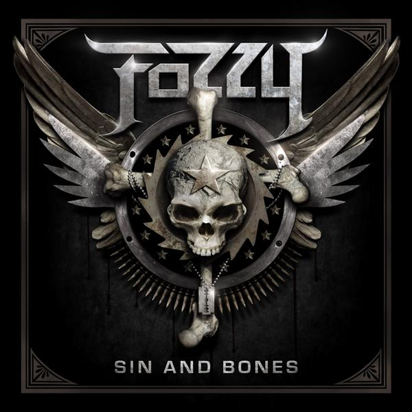
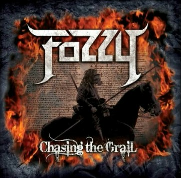
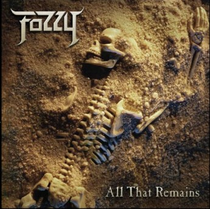
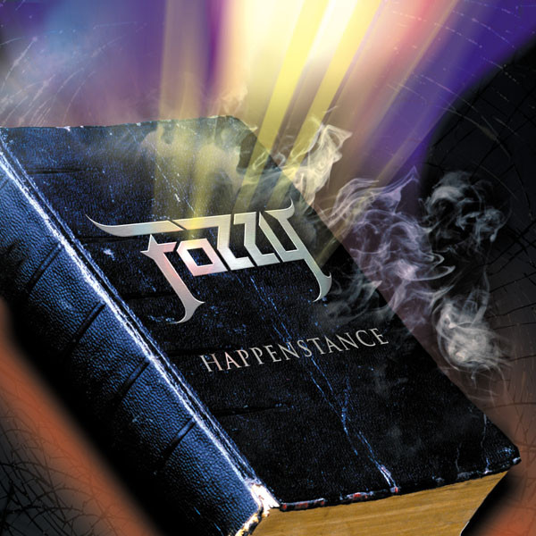
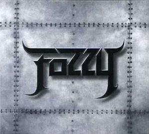

FOZZY has always been about a heavy groove and a good time. And when you have two high-energy performers like Rich Ward and Chris Jericho
(it’s debatable on who jumps higher onstage) in the band, grooves and good times come easy; but these guys aren’t just entertainers. Ward is one of the
most versatile and underrated riffers in rock and metal today, who has created his own style of heavy riffs, melodic choruses and the Duke groove...oh
that crushing groove! And Jericho's singing ability and overall passion for music makes one wonder just how he is able to find the time to excel in pretty
much everything he does. It was these qualities that pushed the band to become one of the hottest up and coming rock acts of the past five years.
After the release of 4 studio albums, each more successful and critically acclaimed than the last, it wasn’t until 2012’s "Sin & Bones" that the band started
to hit their stride. Jericho was winding down his involvement with the WWE, the band was touring more, with their live show reputation growing stronger than
ever. The entertainment, the fun factor, the showmanship and most importantly, THE SONGS, were all there in full force. After touring all of 2012-13 with
Metallica, Shinedown, Avenged Sevenfold and Saxon, the band saw their fanbase grow and diversify.
After their hugest charting (#54 on the Billboard 200) and most successful record, 2014's "Do You Wanna Start A War" and subsequent tour finished at the end
of 2015, the band began focusing on taking their future to a new level creatively and enlisted critically acclaimed song writer Johnny Andrews to produce
the new record. With Andrews, Ward and Jericho (the team who created FOZZY's highest charting single "Lights Go Out") at the helm, FOZZY spent 2016 crafting
their new masterpiece for a spring 2017 release.
"After the huge success of the Do You Wanna Start A War record and the tour that followed that saw us share the stage w such incredible bands as Kiss,
Slash & Myles Kennedy, BuckCherry and Theory Of A Deadman, we decided to take 2016 off to recharge and write songs. But now WE'RE BACK with our best
album EEEVVVEEERRR and are so excited to destroy stages all across the globe again! There is nothing like playing FOZZY rock n roll to our amazing
friends worldwide and watching you guys smile, laugh and have a blast...after all, isn't that what rock n roll is all about? We believe that there's
only three things you can count on in life: death, taxes and the fact that if you come to a FOZZY show, you are GOING to have a great time!! That's the
FOZZY money back guarantee..."- Chris Jericho.
Chris Jericho (Vocals)
Rich Ward (Guitar, Vocals)
Billy Grey (Guitar)
Paul DiLeo (Bass)
Frank Fontsere (Drums)




